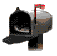

Woodsman
Home Page
I have been collecting for many years, so at this stage I am primarily seeking hard to find items such as factory engraved, special order, or prototype guns; unusual paraphernalia or accessories; pre-WWII advertisements; fancy grips of pearl or ivory; or anything that is in better condition than what I already have in my collection. Generally I am not interested in buying a gun unless it is all original and very close to absolutely new condition, preferably with the original box, tools, and papers. For very rare items I may relax my standards for top condition.
ABOUT CONDITION: In the top condition ranges of a collectible gun, one or two percentage points in the original blue often makes 100% or more difference in the value. I rate conservatively, and often find that my 95% is someone else's 98 or 99%. When I say a gun is 100% (or NIB) that means absolutely as new in every way, with no blue wear, no so-called "box marks," and no damage whatsoever.
Whether buying or selling, I believe that anything less than 100% (if other than normal blue wear) requires more of a description than just a percentage. A gun that is 98% blue and 2% honest wear is much preferable to one that is 98% blue and 2% rust, pitting, or abuse.

Last updated on August 3, 2000